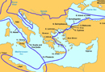

Jason's Quest
The journey of the Argonauts begins in Iolcus. In the time of Athamas, Iolcus was ruled by his brother Cretheus. Cretheus’ son was Aeson, who was the father of Jason. However, Cretheus’ wife Tyro also had an affair with Poseidon (recounted briefly in book 11 of the Odyssey) and their son Pelias took over the throne of Iolcus when Cretheus died. Jason was sent away to be educated by the centaur Chiron. Jason returns after 20 years to reclaim the throne, but Pelias does not want to relinquish his rule. He had been warned by an oracle to ‘beware of the man with one sandal’. Jason arrives at Iolcus with just one sandal which he had lost while helping a woman (Hera in disguise) across a river; Hera therefore becomes Jason’s helper. Pelias, hoping to kill Jason passively by sending him on a dangerous journey, promises to give the throne back to Jason only after he has fetched the golden fleece from Colchis.
The journey of the Argonauts, much like the journey of the Odysseus, is a fantastic one, such that the geography of their route cannot be traced with any certainty. Approximate reconstructions of the journey have, however, been attempted and a rough sense of their imagined route can be seen on the following map (image 1). Jason first calls upon all the heroes of Greece, who collect in Iolcus. The Argo is the name of the ship in which they travel, built by Argos with the help of Athena. Hence the Minyae are called the Argonauts (nautes = sailors). They set out from Iolcus on their way to Colchis. Below are some of their principal adventures:
{kind=link}
1) Hypsipyle and the Lemnian Women: the first stop which the heroes make is on the island of Lemnos. Here the heroes are received by the women of the island, and stay for a year. Aphrodite had previously been angry with the Lemnian women because they did not sacrifice to her. She therefore made their husbands all take Thracian concubines. The women had murdered all of their husbands, with the exception of the king Thoas. Hypsipyle saved her father by hiding him in the temple of Dionysus and then sending him off of the island in a chest. Jason has a love affair with Hypsipyle and the other Argonauts also have affairs with the women. It is Heracles, intent on the mission, who finally convinces the Argonauts to leave the island.
2) Cyzicus and the Doliones: the Argonauts soon stop in the Propontis, where they encounter king Cyzicus and the Doliones. The king is hospitable, and Heracles helps him kill the giants who lived near at hand. However, disaster strikes when the Argonauts try to leave; they are blown back to Cyzicus by winds and at night unknowingly fight with their former host. King Cyzicus is killed, and the Argonauts helped to bury them before leaving.
3) Amycus: the Argonauts next stop at the land of Bebryces, having passed into the Black Sea. The Bebryces are a barbaric tribe which make foreigners box with their king Amycus, the son of Poseidon. Heracles (the obvious choice for a boxing match) has by this point in the journey left the crew in order to search for his male lover Hylas (who was abducted by nymphs), so the Argonaut Polydeuces (a son of Zeus) fights Amycus and kills him with a blow to the nose.
4) Phineus and the Harpies: the Argonauts then make a stop at the home of Phineus, a blind prophet who is plagued by the Harpies because he had revealed too much to mankind. The Harpies were winged creatures who swept down and took Phineus’ food when he tried to eat, leaving him only a small and putrid smelling morsel with which to sustain himself. The Argonauts Zetes and Calais, winged sons of the north wind Boreas, chase the Harpies and defeat them. (see image 2)Phineus then gives the Argonauts important information about passing through the Symplegades, known also as the Crashing Rocks which move continuously and crash together. They pass through these also with the help of Athena. Phineus advised them to release a dove through the rocks, and if it was successful to row through at full speed while the rocks were moving out once again. Athena gives the ship an extra push to get it through. Once the Argonauts pass through the rocks stand still forevermore.
{kind=link}
5) Jason and Aeetes: once they arrive in Colchis, Jason must win the golden fleece. The king of Colchis is Aeetes, a child of the sun. His daughter is the famous Medea. Aeetes is an evil king who suspects that Jason has come to harm him. He agrees to give Jason the golden fleece if he performs a series of tasks. First he has to yoke a pair of fire-breathing bulls, then till an extremely large field and sow it with teeth. From these teeth grow armed men whom he has to defeat (you will recall, perhaps, the sowing of teeth in the story of Cadmus’ foundation of Thebes).
Significantly, Jason is only able to perform these tasks and gain the golden fleece with the help of Medea, the daughter of Aeetes. By the will of Hera and Aphrodite, Medea falls in love with Jason. Medea is descended from the sun, and is both a young maiden and a powerful sorceress. Medea agrees to help Jason defeat the bulls and the great serpent because of her love for him: for the bulls she gives him a magic ointment which protects him from fire and a stone to throw in the middle of the armed men to make them fight each other, while she gives him drugs to subdue the serpent.
Echoing the tale of Theseus, however, Jason in the end mistreats Medea. He does take her back to Greece with him as he promises, but he there abandons her for a Greek princess. Medea is a powerful woman of eastern descent, a non-Greek who agrees to help Jason and leave her homeland for the sake of love, a story which is both romantic and ultimately tragic.
6) Journey Home: Medea leaves with Jason to become his wife in Iolcus. The Argonauts take an even more fantastic route home, up the Danube River, before coming to the western coast of Italy. From here, there are several similarities with Odysseus’ journey. They make a stop at the island of Circe, who is related to Medea as a descendant of the sun. Like Odysseus, they must also pass by the Sirens, Scylla and Charybdis, and they make a visit to the Phaeacians. King Alcinous and queen Arete agree to protect them from Aetes, who continues to chase them, if they are married. They therefore perform their marriage in Phaeacia, after which the Colchians stop chasing them.